Your cluster.
Finally legible.
The private-cloud console for k3s and Kubernetes. Applications first, Pods one click away — in a single Go binary.
Kubernetes, the way
you wish it looked.
Axiom turns a wall of resources into the things you actually run — then gets out of your way. No agents to install, no database to babysit, no tabs to juggle.
Applications
Think in apps,
not in objects.
Deployments, StatefulSets, DaemonSets and CronJobs appear as applications — with everything you do to them one click away.
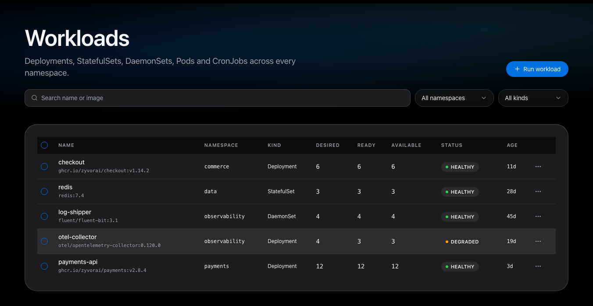
- Start, stop, restart, scale. From the row menu, with confirmation where it matters.
- Rollout history and undo. Roll back to a previous revision.
- Why isn’t it running? An automatic diagnosis explains any Pod that isn’t cleanly Running.
Logs & terminal
Inside any container,
instantly.
Live log tails that stay open as long as you do, an interactive terminal per Pod, and a one-click link to any declared port.
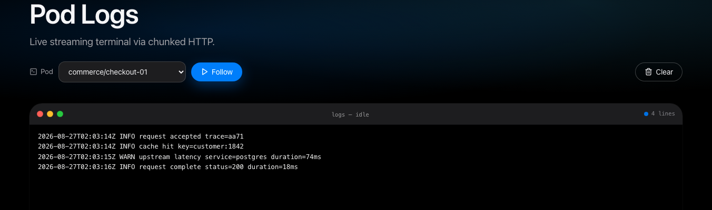
- Streaming logs. Follow a Pod without an artificial cutoff.
- Terminal tab. Interactive PTY on a live cluster; one-shot commands in demo mode.
- Port links. Open a container’s declared ports without a port-forward.
Nodes
Capacity at a glance.
Drain in a click.
Every node’s CPU, memory, Pod count, kubelet version and runtime on one screen — with cordon and drain right there.
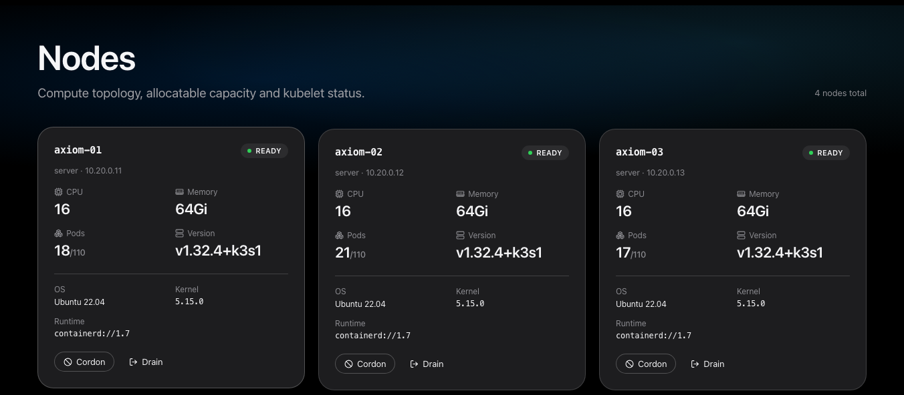
- Cordon and drain. Safely move work off a node before maintenance.
- Protected namespaces. System namespaces are guarded from bulk eviction.
Fleet
Every cluster.
One glance.
Register more clusters and Axiom probes each one in the background: does it answer, how many nodes are ready, what needs attention. Search workloads across all of them.
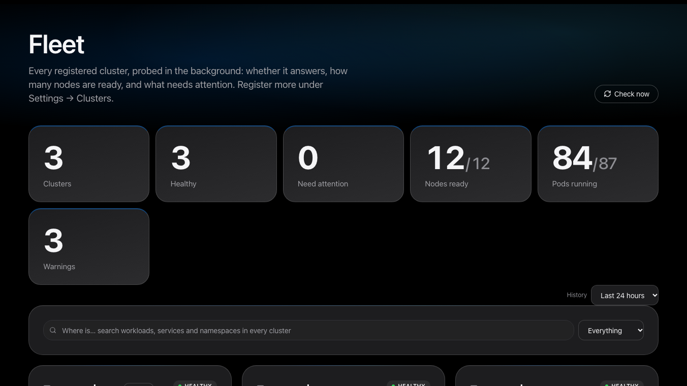
- Uptime and incidents. Per-cluster history with a state strip, over a window you choose.
- Survives restarts. History is kept in a ConfigMap and shared across replicas; a restart is drawn as a gap, not an outage.
- Calm by design. Two consecutive failures before a cluster is marked down, so a blip does not page anyone.
GitOps
Argo CD and Flux,
without the YAML.
Create an application from a form, preview the exact manifest, then edit it in place — the change is shown before it is saved.
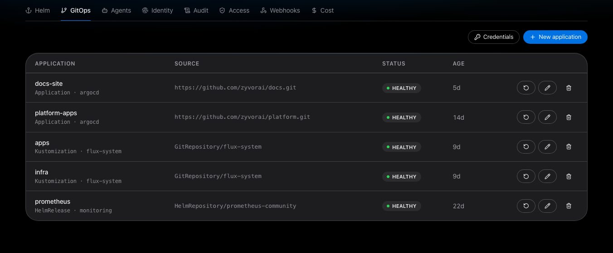
- Edit with a preview. A structured diff of exactly what changes; a concurrent edit is refused, not overwritten.
- Delete, honestly. Shows whether the workloads go too, and asks you to type the name when they will.
- Write-only credentials. Repository logins are stored as labelled Secrets and never shown again.
Autoscaling & cost
Scale on signals.
Know what it costs.
Horizontal, vertical and event-driven autoscalers in one place — create or edit VPAs and KEDA ScaledObjects with a preview — and a cost view that can compare your estimate with the cloud invoice.
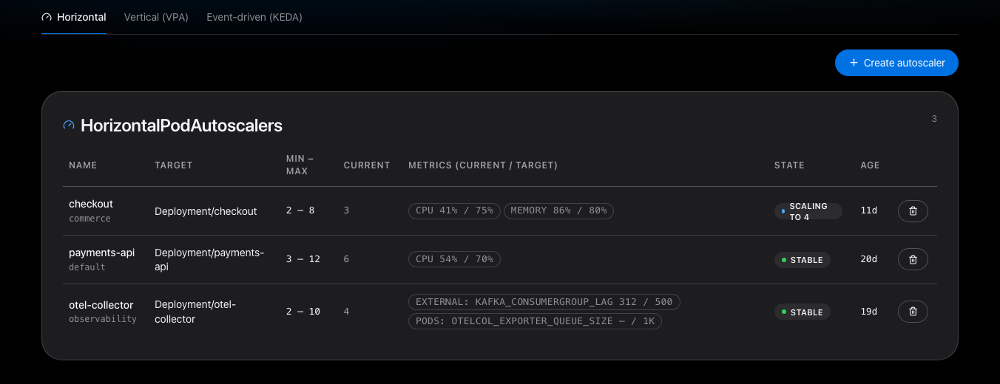
- VPA and KEDA. Create and edit in place; objects the form cannot represent are shown as read-only with the reason.
- Budgets and rightsizing. Warnings before you overspend, and recommendations from p95 usage when Prometheus is connected.
- OpenCost, optionally. Switch from request-based estimates to actual allocation. Invoice reconciliation is experimental.
Helm
Releases and charts,
in context.
Browse repositories and OCI registries, read default values, then install, upgrade and roll back — including from private registries with write-only logins.
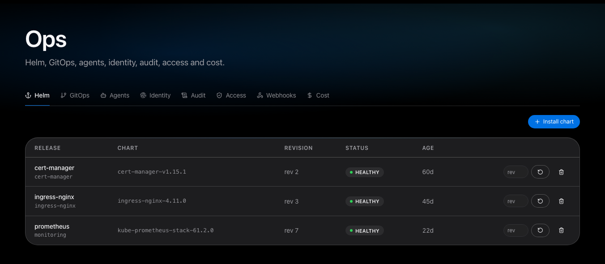
- Values stay private. Stored in a Secret owned by the install Job, never a permanent plain-text ConfigMap.
- More under Ops. GitOps, agents, identity, audit, access, webhooks and cost.
Backups
Snapshots and Velero,
side by side.
Volume snapshots, Velero backups and schedules in one place, with create and restore actions a click away.
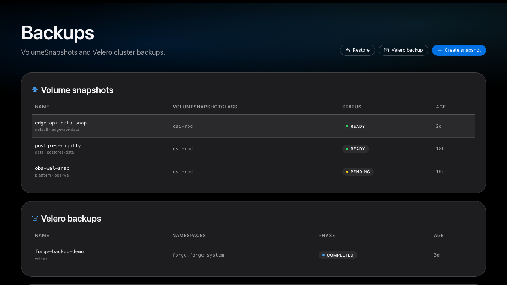
- On demand. Create a snapshot or a Velero backup when you need one.
- On a schedule. See each schedule and when it last ran.
Timeline
What changed,
in one feed.
Kubernetes events, audit entries, alerts and rollout revisions merged into a single, filterable timeline — and a “What changed” tab on every workload.
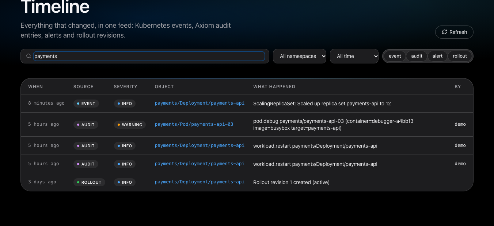
- Filter by source. Event, audit, alert or rollout, by namespace and time range.
- Namespace-aware. Restricted accounts only see their own namespaces.
Health check
Problems, each with
a suggested fix.
Rule-based analysers look for crash loops, OOM kills, Services with no endpoints, Pending volumes, broken Ingress backends and HPAs that cannot scale. No data leaves the cluster.
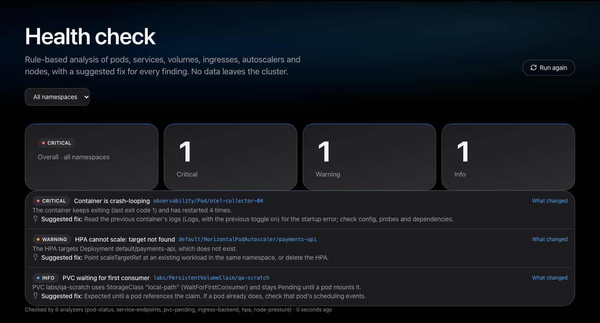
- Deterministic. No model involved; every finding explains why it fired.
- One click to context. Jump from a finding to what changed on that object.
Security
Scanner findings,
read-only, in context.
Trivy-operator vulnerability and config-audit reports and Kyverno-style policy reports, rolled up per workload. Without those operators, the page tells you how to install them.
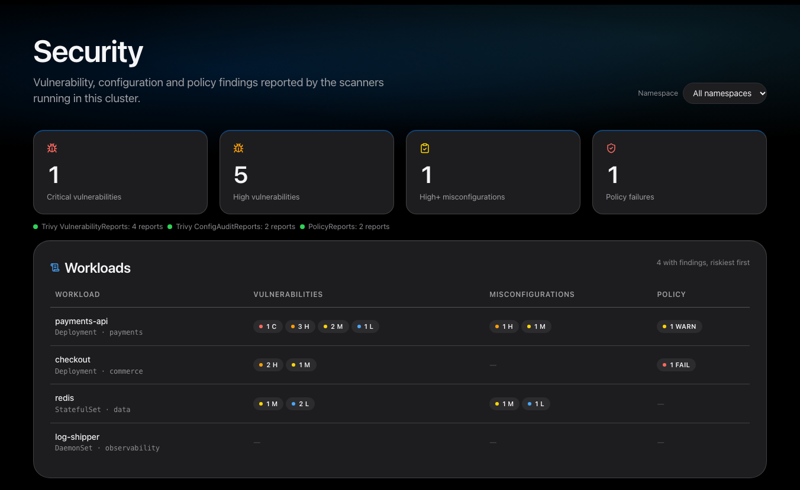
- Riskiest first. Workloads sorted by severity across all three report types.
- No scanner required to run Axiom. The page appears empty, not broken, when the CRDs are absent.
Access review
Who can delete Secrets?
Ask.
A read-only RBAC viewer answers “who can do this, where, and through which binding” — by verb and resource, or by subject. Changes stay in your GitOps flow.
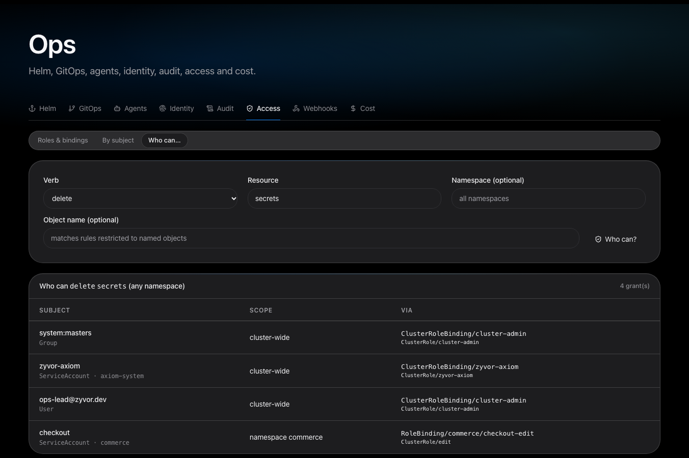
- Effective permissions. Bindings are resolved through their ClusterRoles, cluster-wide and per namespace.
- Sensitive by design. Admin and operator only; viewers cannot see it.
Everything you reach for.
Nothing you don’t.
Day-2 operations without a pile of kubectl one-liners.
Fleet
Health you can trust.
Background probes, uptime and incident history per cluster, kept across restarts.
GitOps
Argo CD and Flux.
Create, edit with a preview, sync and delete — with credentials that stay write-only.
Autoscaling
HPA, VPA, KEDA.
See every autoscaler, create new ones and edit existing ones in place.
Cost
Budgets and rightsizing.
Request-based or OpenCost allocation, budgets that notify, and an experimental invoice comparison.
Nodes
Cordon, drain, taint.
Live CPU and memory history per node. Evict Pods singly or in bulk, with protected namespaces guarded.
Helm
Releases, in context.
Browse, install, upgrade and roll back Helm releases. Values never sit in a permanent plain-text ConfigMap.
Backups
Velero, built in.
See Velero backups and schedules, and create a backup on demand from the same console you operate from.
Any CRD
Bring your own.
A generic browser for every installed CustomResourceDefinition, plus GitOps, Gateway API and KubeVirt views.
Multi-cluster
One switcher.
Register more clusters and move between them from the sidebar. Kubeconfigs that could run local commands or read local files are rejected.
Notifications
Warnings reach people.
Cluster Warning events forwarded to Slack or any webhook — with the secret URL never written to logs.
Timeline
What changed, in order.
Events, audit entries, alerts and rollouts on one timeline — and a “What changed” tab on every workload.
Health check
Problems, with fixes.
Crash loops, OOM kills, Services with no endpoints, Pending volumes and more — each with a suggested fix.
Debug
Debug containers.
Attach an ephemeral debug container to a running Pod. An admin-only node shell is available, off by default.
Secure by default.
Boringly so.
A console with cluster access has to be the most careful thing in the cluster. Axiom is built that way.
Two-factor
TOTP, with teeth.
Authenticator codes and recovery codes for local and LDAP accounts, a policy to require them by role, and sign-out-everywhere that really revokes sessions.
Pod windows
Own origin per session.
Pod web UIs open on a separate origin, optionally a fresh hostname per session, with signed single-use tickets that work across replicas.
Identity
Local, OIDC, SAML, LDAP.
Admin, operator and viewer roles checked in middleware. Restrict any account to specific namespaces. SAML assertions are signature-verified.
Runtime
Pod Security: restricted.
Runs as non-root with a read-only root filesystem, every capability dropped and the RuntimeDefault seccomp profile.
Supply chain
Signed and checksummed.
Release binaries ship with SHA-256 sums. Container images on GHCR are signed with cosign, keyless.
Abuse resistance
Rate-limited and audited.
Login throttling per client, bounded request bodies and sessions, and an audit log of who changed what.
Access review
Who can do what.
A read-only RBAC viewer answers “who can delete Secrets here?”, plus NetworkPolicy analysis and Trivy and Kyverno report views.
AI, on your terms
Bring your own model.
Opt-in “Explain with AI” through your own OpenAI-compatible, Anthropic or local Ollama endpoint. You see the redacted payload first; Secret values never leave.
Languages
Speaks your team’s
language.
The whole console — sign-in, every page, errors and notifications — in eight languages, picked from your browser or the user menu.
Translations are machine-assisted and not yet reviewed by native speakers — corrections are welcome.
How it compares
Lighter than a platform.
Shared, unlike a desktop app.
Axiom sits between a per-laptop Kubernetes client and a full multi-cluster management platform. A category comparison, not a product teardown.
Describes typical tools in each category. Specific products vary, so check any tool you are weighing.
Up in a minute.
Try it with no cluster at all, then point it at a real one with Helm.
# try it with demo data — no cluster needed tar xzf zyvor-axiom_*_linux_amd64.tar.gz AXIOM_MODE=demo AXIOM_USERNAME=demo AXIOM_PASSWORD=demo \ ./zyvor-axiom_*/zyvor-axiom # then open http://localhost:5090 # install into a cluster helm install axiom deploy/helm/axiom \ --set auth.username=admin --set auth.password='…'
Free to try.
Licensed to run.
Axiom is source-available under the Zyvor Production License v1.0. Evaluation, development, testing and research are free. Production use needs a commercial license.
Meet your cluster
again.
One binary. Four platforms. Ready when you are.